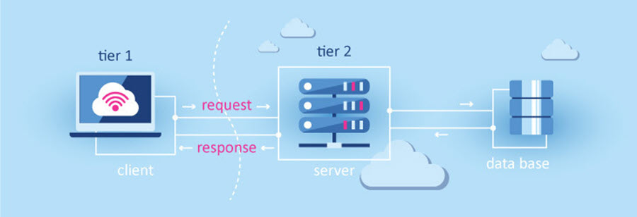
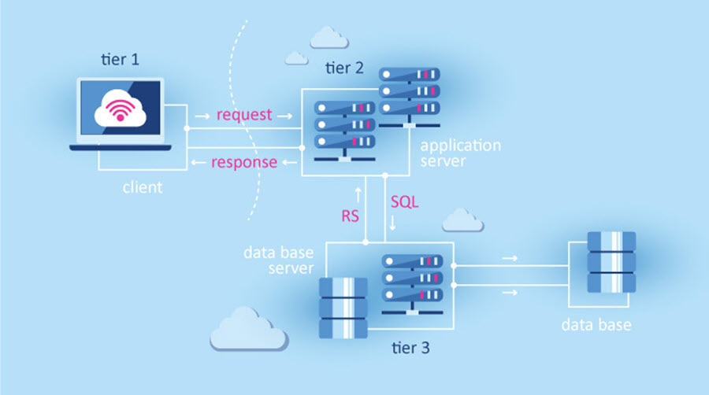
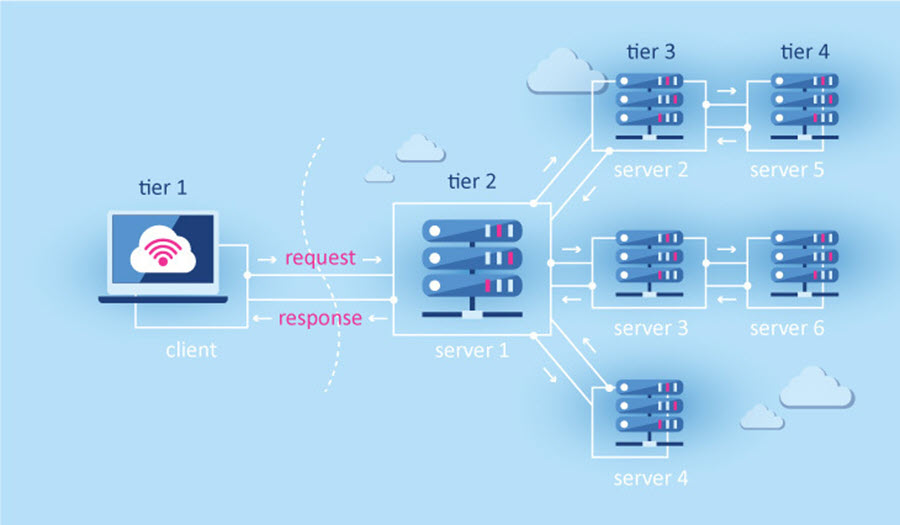

Дворівнева архітектура складається з двох вузлів:
- сервер, який відповідає за отримання запитів і відправку
відповідей клієнту, використовуючи при цьому лише власні ресурси;
- клієнт, який представляє користувацький інтерфейс.
Принцип роботи полягає в тому, що сервер отримує запит, обробляє його і відповідає
безпосередньо, без використання сторонніх ресурсів.

Трирівнева архітектура складається з наступних компонентів:
-
представлення даних – призначений для користувача інтерфейс;
-
прикладний компонент – сервер додатків;
-
керування ресурсами – сервер бази даних, який надає інформацію.
Принцип роботи полягає в тому, що декілька серверів обробляють запит клієнта. Розподіл операцій знижує
навантаження на сервер.

Трирівневу архітектуру можна розширити до багаторівневої (N-tier, Multi-tier)
способом встановлення додаткових серверів. Багаторівнева архітектура дозволяє
підвищити ефективність роботи інформаційної системи, а також оптимізувати розподіл
її програмно-апаратних ресурсів.